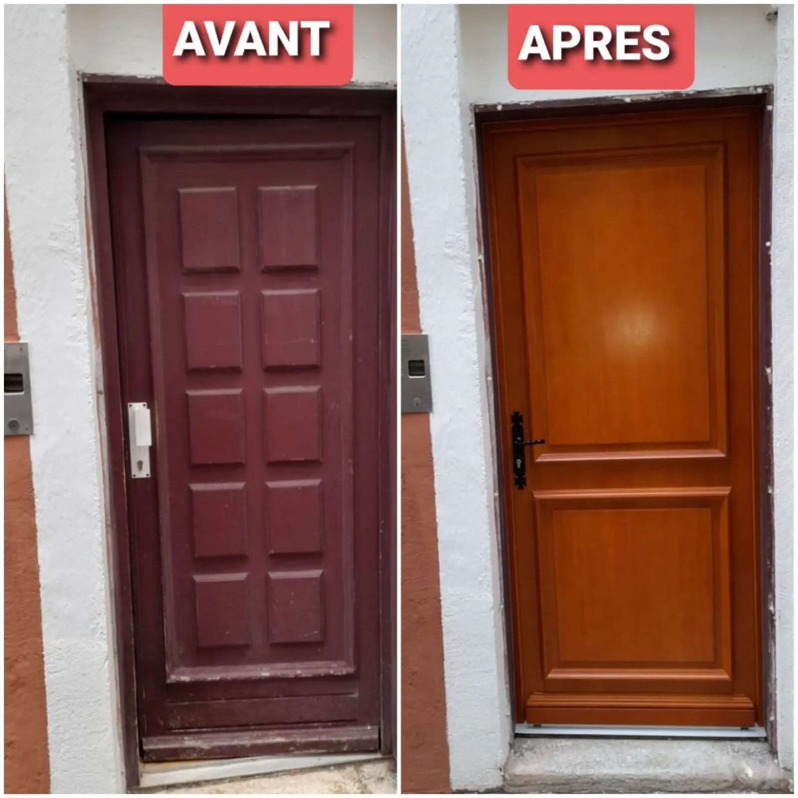
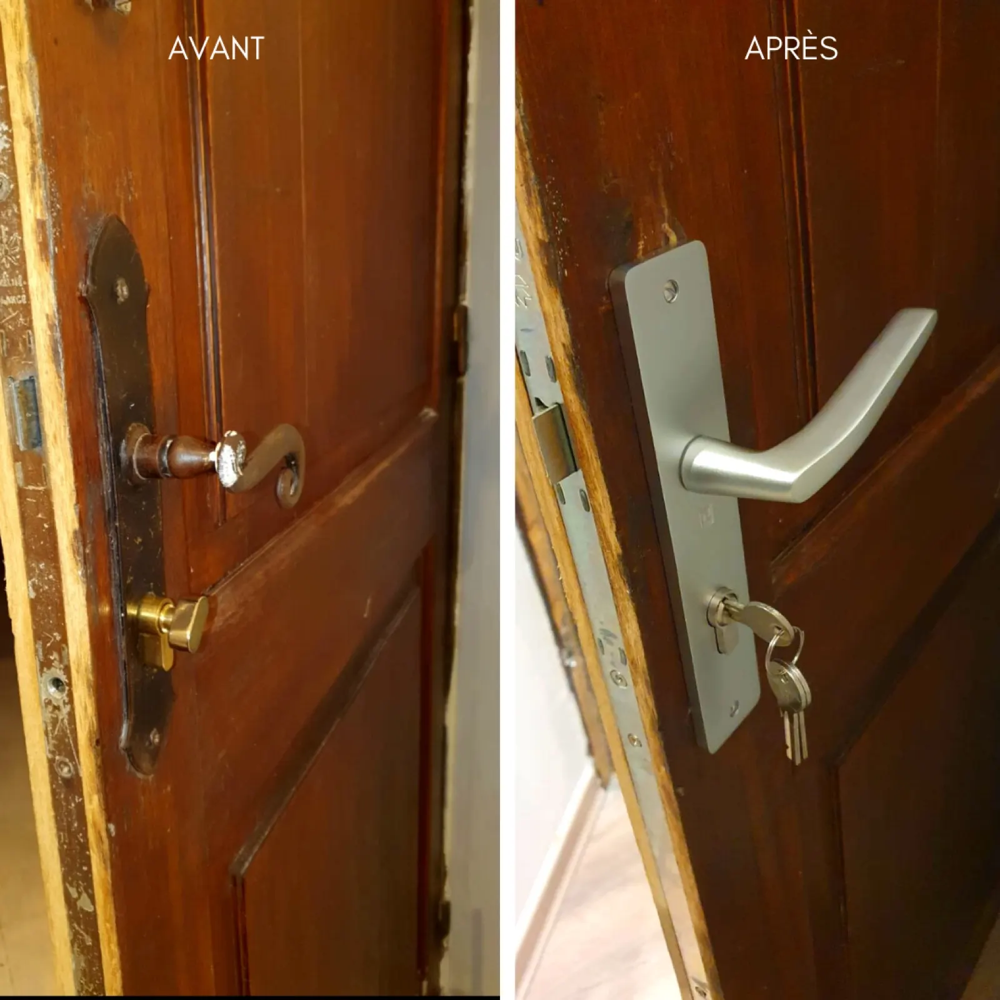
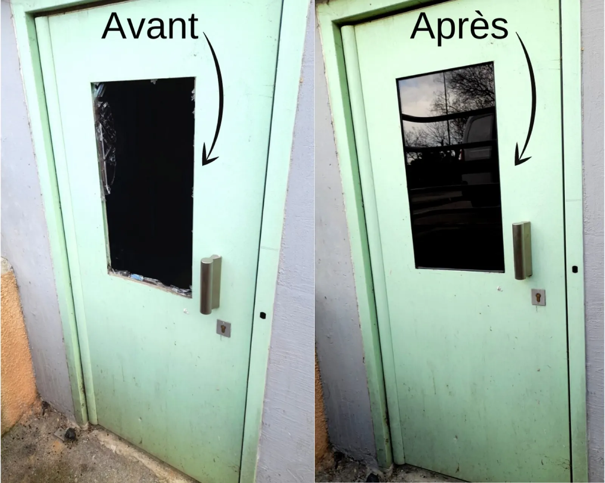
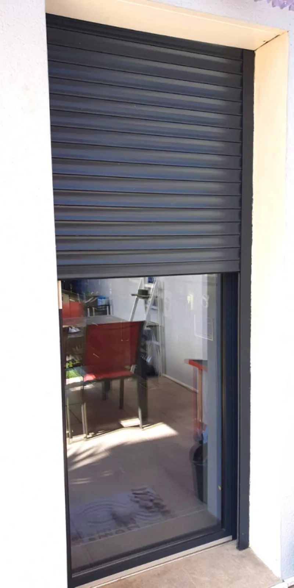
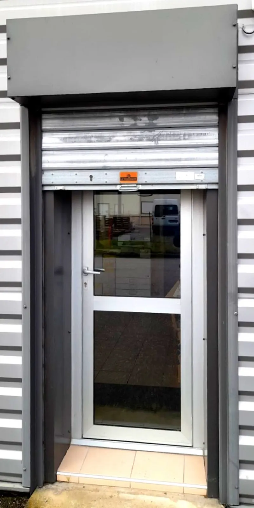

Artisan à Montélimar, en Drôme et en Ardèche
Serrurerie,
vitrerie et
menuiserie
à Montélimar.

Avant AprèsNous intervenons à Montélimar et alentours rapidement pour l'ouverture d'une porte claquée ou bloquée, après une perte ou un vol de clés, une effraction ou un cambriolage. Particuliers ou professionnels, contactez-nous.
- Montélimar
- Bollène
- Pierrelatte
- Valence
- Saint-Paul-Trois-Châteaux
- Livron
- Loriol
- Aubenas
- Le Teil
- Cruas
Particuliers et professionnelsTransparence totale sur les prix
Qui sommes-nous ?
Artisan en menuiserie, serrurerie et vitrerie, à votre service. Nous nous chargeons de la pose ou du remplacement de tous types de serrures, vitrages, contrôle d'accès, grilles de défense ou portes blindées.
Menuisier de métier, nous intervenons également pour le dépannage, la pose ou le remplacement de volets roulants et de toutes les menuiseries extérieures : porte d'entrée, fenêtre, porte de garage, grille de défense.
Nous mettons en œuvre tous les moyens à notre disposition pour la satisfaction de nos clients.
Transparence totale sur les prix, pas de mauvaise surprise.
A2I, Montélimar
Serrurerie
Basée à Montélimar, A2I met tout son savoir-faire à votre service pour vous dépanner et vous apporter les solutions les plus adéquates : pose de tous types de serrures, dépannages express.
Nous intervenons pour
- serrure fracturée
- porte verrouillée
- porte claquée
- clé oubliée
- perte de clé
- vol de clé
- clé cassée dans le cylindre
- clé qui n'entre plus dans la serrure
Pose ou remplacement de vos serrures
- Encastrable, posée dans l'épaisseur de la porte
- En applique, avec un boîtier apparent
- Carénée, qui masque la tringlerie
- Avec poignée, pour les portes intérieures
- Serrure 3 points renforcée
- Poignée anti-effraction, barre de pivot
- Serrure anti-panique, ferme-porte
- Cylindre, barillet, verrou

Porte blindée et blindage de porte
Particulier, vous souhaitez installer une porte blindée ou blinder votre porte d'entrée, en respectant les règles de votre copropriété. Professionnel, vous voulez remplacer une porte de service par un bloc porte blindé.
Nous trouvons le produit adapté à votre besoin.
Porte claquée, clés perdues, effraction ?
Il n'est pas facile d'être sûr de faire appel à un serrurier honnête quand on est dans l'urgence. A2I répond à toutes vos questions par téléphone avant d'arriver sur les lieux.
Montélimar et alentours, en Drôme et en Ardèche.
Après un cambriolage
Vous pouvez demander le remboursement de votre facture à votre assurance habitation. Conservez l'ancienne serrure pour prouver à l'expert qu'elle a été fracturée.
Après une perte ou un vol de clés
L'assurance de votre carte bancaire peut prendre en charge les frais liés à l'intervention du serrurier.

Vitrerie
Votre artisan vitrier en urgence ou sur rendez-vous à Montélimar (26), pour le remplacement d'une vitre cassée, un dépannage de miroiterie ou le remplacement d'un double vitrage.
Une vitrerie sur mesure pour portes en verre, baies vitrées, fenêtres, vitrines :
- simple, double ou triple vitrage
- verre feuilleté de sécurité
- verre dépoli et opaque


Volets roulants et rideaux métalliques
Pose, remplacement et dépannage. Votre volet ou votre rideau ne monte plus, ne descend plus, se ferme mais s'ouvre difficilement : nous avons la solution.
La page Volets roulantsQue vous soyez un particulier ou un professionnel, contactez-nous.
Un dépannage, une serrure, une vitre, une porte ou une fenêtre à poser : appelez-nous, ou demandez votre devis par e-mail. Nous vous recontactons le plus rapidement possible.
- Téléphone
- 06 21 87 94 43
- menuiseriea2i@gmail.com
- Adresse
- Rue Louis Delage
26200 Montélimar